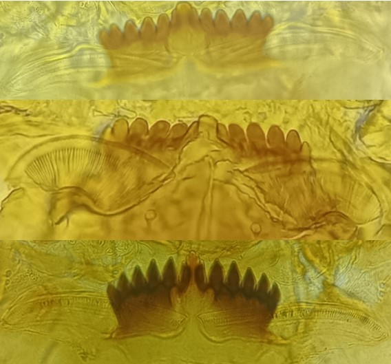
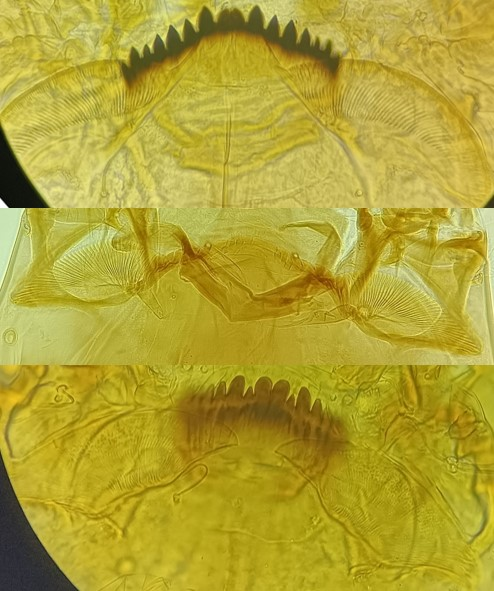
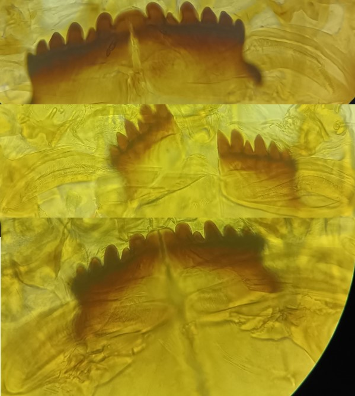

Sous famille des Chironominae
Clef d’identification des tribus de chironominae



Plaques ventromentales en forme de « bâtonnet » , rectangulaires, horizontales, striées à la base
Parfois peu visibles et/ou peu développées
Plaques ventromentales minces qui possèdent une étroite bande centrale de fines stries
Mentum avec dent médiane simple et la 2ème paire des dents latérales réduite